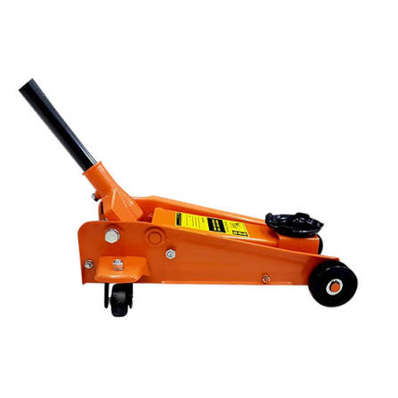

Hydraulic Floor Jacks

Our heavy-duty hydraulic floor jacks are built for professional workshops and serious DIY mechanics. Featuring a dual-pump mechanism for rapid lifting and a reinforced steel frame, it ensures maximum safety and stability when working under your vehicle.
| Specification | Details |
|---|---|
| Capacity | 3 Tons |
| Material | Heavy-Duty Steel |
| Color | Red |